朝のニュースまとめ
2026年11月1日（日）
🇯🇵 日本の主要ニュース
GMO不正アクセス、子会社が2年前に脆弱性を指摘 あす2日に会見
GMOインターネットグループの為替取引サービスが不正アクセスを受けた問題で、2年前に子会社のセキュリティー企業がシステムの脆弱性を指摘していたことがわかりました。熊谷正寿会長（グループ代表）が2日に会見して説明する予定です。
出典：NHK
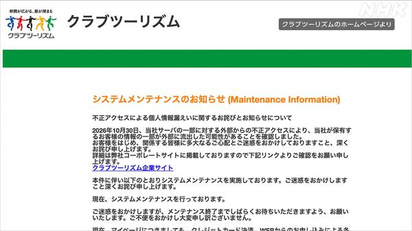
クラブツーリズム、約432万件の個人情報漏えいか旅行会社クラブツーリズムはサーバーへの不正アクセスで、ネット予約システムに登録した会員の個人情報およそ432万件が漏えいした可能性があると発表しました。企業への不正アクセス被害の発表が相次いでいます。
出典：NHK
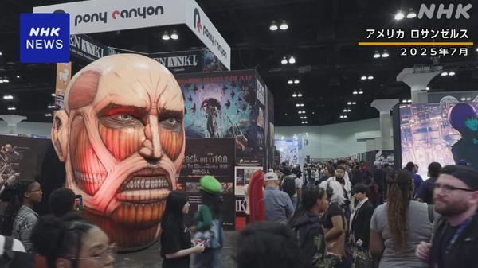
日本のアニメ産業市場、初の4兆円超 5年連続で過去最高日本動画協会によると、去年のアニメ産業の市場規模は全体の約6割を占める海外市場が好調で、5年連続で過去最高を更新し初めて4兆円を超えました。
出典：NHK
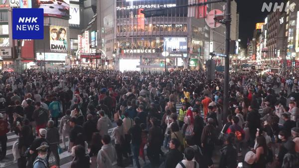
ハロウィーンの渋谷、混雑も「大きなトラブルなし」週末と重なった今年のハロウィーンで、東京・渋谷は10月31日から1日未明にかけて多くの人で混雑しましたが、警視庁によるとこれまでに大きなトラブルは確認されていません。
出典：NHK
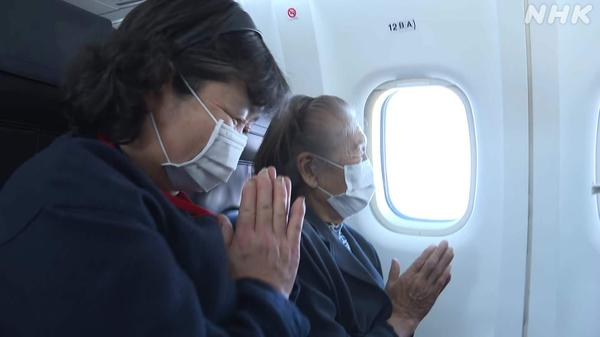
北方領土の元島民、6年ぶりに「上空慰霊」北方領土の元島民やその家族ら34人が飛行機に乗り、北海道上空から故郷の島々を望んで先祖を供養する「上空慰霊」が6年ぶりに行われました。
出典：NHK
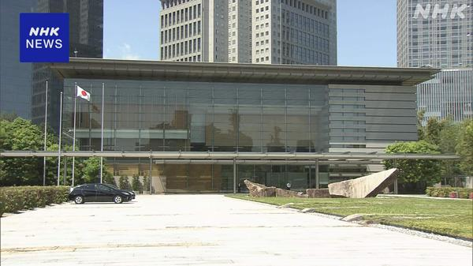
安保3文書改定、「防衛と経済の好循環」を柱に 新法人設立も政府は年内に改定する安全保障関連の3文書で「防衛と経済の好循環」を柱の1つにする方針です。防衛装備品の生産力強化や移転推進を担う新たな法人も設立するとしています。
出典：NHK
米海兵隊員を酒気帯び運転の疑いで逮捕 外出禁止の時間帯に
沖縄市の国道で31日未明、米海兵隊の兵士が酒気帯び運転の疑いで逮捕されました。那覇市の強盗殺人事件を受けて米軍が出していた外出禁止措置の時間帯だったということです。
出典：NHK
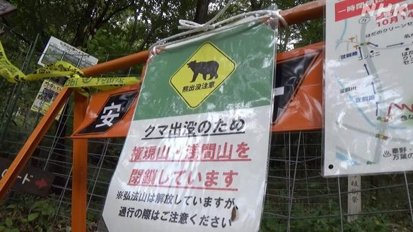
「捕獲後に山へ放した」クマが再び出没し駆除 神奈川・秦野神奈川県秦野市で一度捕獲して山奥に放したツキノワグマが再び人里近くに現れ、31日に捕獲・駆除されました。市街地近くの公園周辺で10月に入って目撃が相次いでいました。
出典：NHK
iDeCoが12月に大幅拡充、「企業年金弱者」の加入が焦点
個人型確定拠出年金（iDeCo）が12月に掛け金の上限引き上げなどで大きく拡充されます。企業年金のない会社員などの加入をどう広げるかが焦点です。
出典：日本経済新聞
🌍 世界の主要ニュース
バイナンス、63億ドルのハッキング被害の9割を補填 FBIは北朝鮮の犯行と断定
暗号資産取引所バイナンスは、過去最大級とされるハッキング被害のうち約9割を補填したと明らかにしました。FBIは北朝鮮による犯行だとしています。
出典：BBC
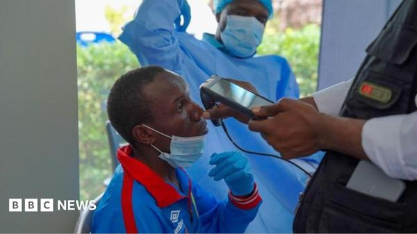
コンゴ民主共和国のエボラ出血熱、死者5000人超で過去最悪コンゴ民主共和国でのエボラ出血熱の流行で、政府データによると感染者は1万人を超え、死者は5000人を上回りました。同国で過去最悪の流行で、周辺国への拡大も懸念されています。
出典：BBC／AP
フランスで再び大規模デモ、32万人参加 一部で治安部隊と衝突
フランスで31日、物価高対策などを訴える大規模なデモが再び行われ、約32万人が参加しました。若者主導の抗議は欧州各地に広がっています。
出典：NHK／BBC
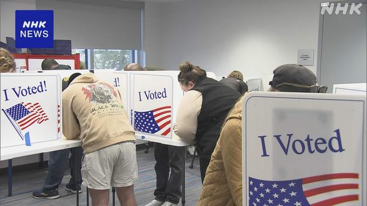
米中間選挙、期日前投票がすでに前回を上回る11月3日の投票日を前に、期日前投票を済ませた人は2022年の前回中間選挙をすでに上回りました。ローマ教皇レオ14世も投票しています。
出典：NHK
イラン外交団がカタールで協議、最高指導者は「攻撃されれば大規模反撃」
米国によるイラン攻撃の再開が取り沙汰される中、イラン外交団は仲介国カタールで米側の提案について協議を続ける一方、最高指導者モジタバ師は攻撃を受ければ反撃するよう軍に指示しました。
出典：NHK
ウクライナ南部オレシュキ、局地停戦下の住民退避が終了
ロシアとの局地的な停戦の下で行われていたウクライナ南部オレシュキからの住民退避が終わりました。数年ぶりに家族と再会する人もおり、停戦の実績が和平につながるかが焦点です。
出典：NHK／BBC
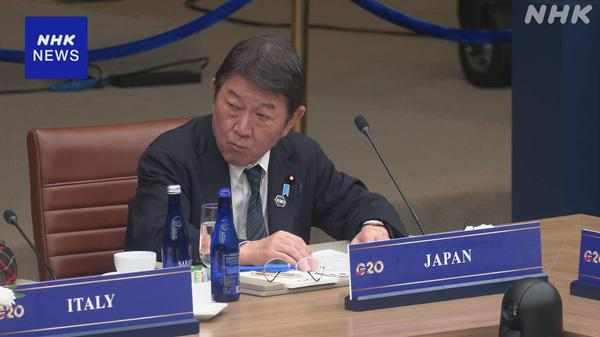
G20外相会合が閉幕、主要課題で合意できず米アトランタで開かれたG20外相会合が閉幕しました。APによると主要な課題で合意に至らず、茂木外相は中国を念頭に過剰生産がサプライチェーンを弱めていると指摘しました。
出典：NHK／AP
クアッド外相会合、中国念頭に「経済的威圧」への懸念を共有
日米豪印のクアッド外相会合が米国で開かれ、中国を念頭に恣意的な輸出規制などの経済的威圧に深刻な懸念を表明し、首脳会合に向けた連携を確認しました。
出典：NHK
カリフォルニアのハロウィーン用品店で銃撃、1人死亡6人負傷
米カリフォルニア州のハロウィーン用品チェーン「Spirit Halloween」の店舗で銃撃事件があり、1人が死亡、6人がけがをしました。
出典：AP
トランプ氏のWSJ提訴、裁判所が棄却 エプスタイン氏への書簡報道
トランプ大統領がエプスタイン氏宛ての書簡をめぐる報道でウォール・ストリート・ジャーナルを訴えていた裁判で、裁判官は訴えを棄却しました。
出典：AP
🤖 AIニュース
 OpenAI、新たな資金調達の目標額を100億ドル引き下げ
OpenAI、新たな資金調達の目標額を100億ドル引き下げ英FTの報道によると、OpenAIは進行中の資金調達ラウンドの目標額を100億ドル引き下げました。投資家の関心が期待ほど集まっていないとみられます。
出典：TechCrunch／ロイター
Apple新CEO「AIのためのAIは出さない」
Appleの新CEOは、AI競争で出遅れているとの見方に対し、AIのためだけのAI製品は出さないと述べ、同社の姿勢を擁護しました。
出典：TechCrunch
Anthropic、上場後に「ジャンク級」格付けの見通し
FTによると、ブラックストーンはIPO後のAnthropicが信用格付け会社から投機的（ジャンク）等級の高めの評価を受けると予測しています。巨額の投資資金の調達コストが上がる可能性があります。
出典：TechCrunch
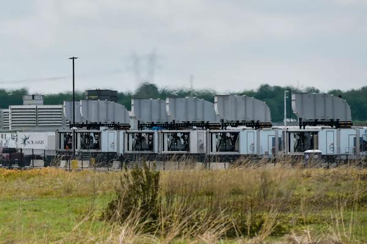
xAIのデータセンター大気汚染訴訟、審理継続へ全米黒人地位向上協会（NAACP）が、xAIのデータセンターが大気浄化法に違反していると訴えた裁判で、裁判官は訴訟の継続を認めました。
出典：TechCrunch
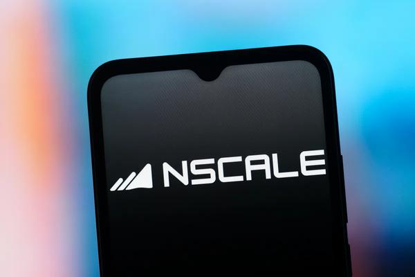
NVIDIA、英NscaleのAIデータセンター融資で「連帯保証人」役を検討NVIDIAは、Nscaleが米ウェストバージニア州に建設するAIデータセンターの融資について、保証人になることを検討しています。AI投資への投資家の不安を和らげる狙いとみられます。
出典：TechCrunch
Claude Enterpriseに3つの新機能、AIの費用対効果を可視化
Anthropicは企業向け「Claude Enterprise」に、利用状況の可視化から予算配分までを支援する新機能を追加しました。IT部門がAI導入の費用対効果を説明しやすくなります。
出典：ITmedia エンタープライズ
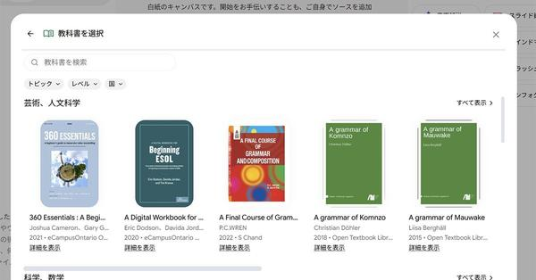
Gemini Notebookで数百冊の教科書が無料に 日本でも利用可Googleは「Gemini Notebook」内で、米国とインドの出版社が提供する数百冊の教科書に無料でアクセスできるようにしました。
出典：ITmedia AI＋
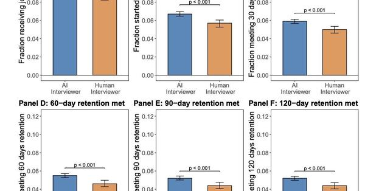
「AI面接官」は人間より内定を出しやすい？ 約7万人で実験米カーネギーメロン大学などの研究で、音声AIによる面接は内定率を高め、入社後の定着率も18％上がったと報告されました。
出典：ITmedia NEWS
Xboxの幹部「ゲーム開発でAIはすでに使われている」
XboxのBrandon Stirrup氏が、ゲーム業界でAIの利用が広がっているとXに投稿し、翌日削除しました。生成AIをめぐってはゲーム業界やプレイヤーの間で賛否が分かれています。
出典：Engadget
プライバシー重視のAIアシスタント「Ollie」がサービス終了へ
利用者のプライバシーを重視したAIアシスタント「Ollie」の創業者が、1週間後にサービスを終了すると発表しました。大手のAIアシスタントが相次ぐ中で、小規模サービスの厳しさが浮き彫りになっています。
出典：TechCrunch
💻 PC・ガジェットニュース
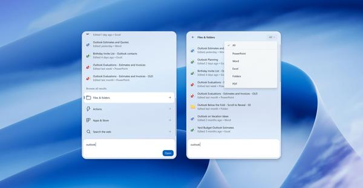
Windows 11の新ビルド、検索の強化とXboxモードのショートカット最新のWindows Insiderビルドで、検索にフィルターやアクション、スマホの操作機能が追加され、Xboxゲームモードのクイック設定にも新しいショートカットが入りました。
出典：The Verge
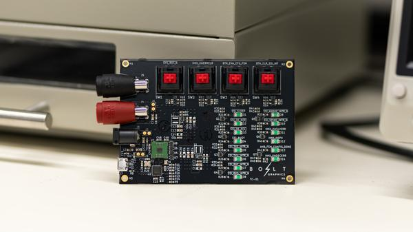
Bolt Graphics、新GPU「Zeus」の初回起動に成功シミュレーション向けGPU「Zeus」を開発するBolt Graphicsが、10月中旬にテストチップを起動し、機能上の問題は見つからなかったと発表しました。
出典：Engadget
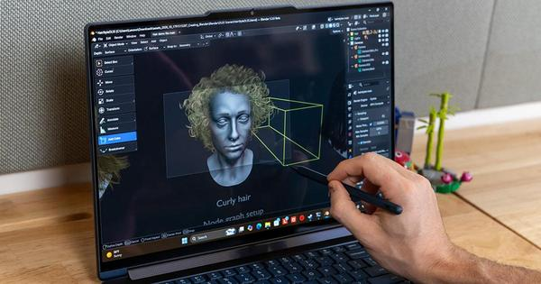
RTX Spark搭載「Lenovo Yoga 9n 2-in-1」レビュー、魅力はペンNVIDIAのRTX Sparkを積んだクリエイター向け2-in-1「Lenovo Yoga 9n」を試用。最高性能ではないものの、ペンやディスプレイの使い勝手が光るとしています。
出典：ギズモード・ジャパン
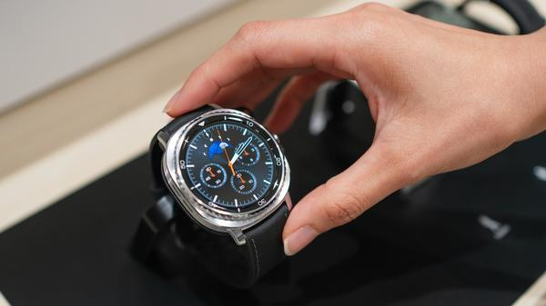
初代Galaxy Watch 4系は新One UIの対象外にSamsungの「One UI 9 Watch」は、すでに約束の4回のアップデートを終えたGalaxy Watch 4シリーズには配信されません。
出典：Engadget
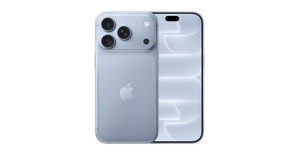
au販売ランキング9月、「iPhone 18 Pro」が初登場首位auオンラインショップの9月の売れ筋は、9月18日発売の「iPhone 18 Pro（256GB）」が初登場で1位に。iPhone 18 Pro／Pro Maxが容量違いを合わせてトップ10のうち6つを占めました。
出典：ITmedia Mobile
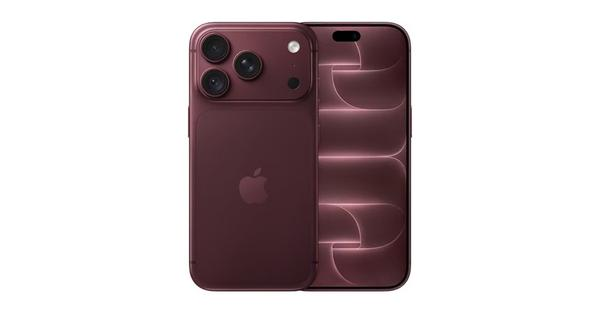
楽天モバイル販売ランキング9月、「iPhone 17e」の連続首位が途切れる楽天モバイルの9月の売れ筋は「iPhone 17」が首位に立ち、6カ月連続首位だった「iPhone 17e」は3位に。「iPhone 18 Pro」は初登場5位でした。
出典：ITmedia Mobile
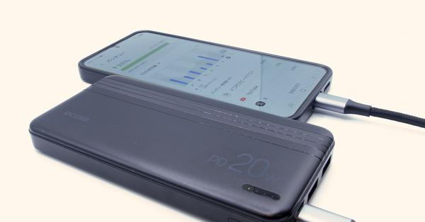
ダイソーの1100円「PD対応20Wモバイルバッテリー」を試すダイソーで1100円の10000mAhモバイルバッテリーをGalaxy S25で試したところ、ほぼスペック通りの速さで充電できたとしています。
出典：ITmedia Mobile
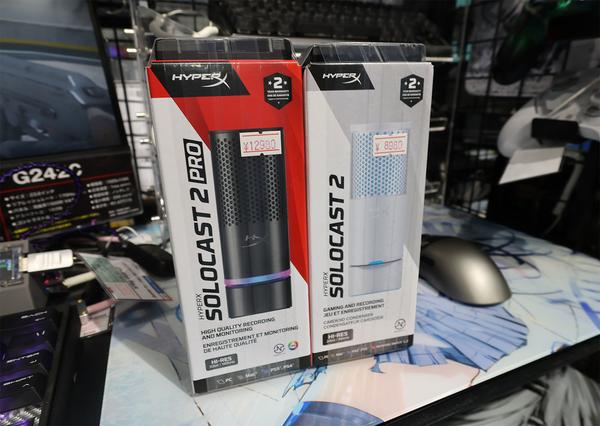
週末アキバ、音質重視のUSBマイクがトレンドに秋葉原ではHyperXのUSBマイク「SoloCast 2 Pro」が登場。CORSAIRのミリタリー調PCケースや、さくらみこ×HYTEのコラボケースの展示も注目を集めました。
出典：ITmedia PC USER
povoが目指す「パートナー連携」と世界展開
KDDIのpovoが、プリペイド型の強みを生かして他社サービスに通信機能を組み込む独自のB2B2C戦略と海外展開を説明しました。
出典：ITmedia Mobile
🔥 Xのトレンド（日本）
ジャンルで絞らず上位20件を掲載。「未確認」はX上の投稿だけを根拠にしたもので、報道機関による裏付けはありません。
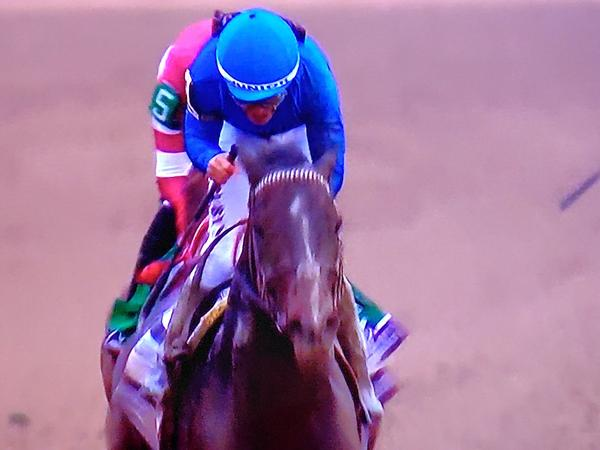
1. フォーエバーヤング
米キーンランド競馬場のBCクラシック（G1）で、連覇を狙った日本のフォーエバーヤング（坂井瑠星騎手）は1番人気でしたが5着に敗れました。勝ったのは米国のソヴリンティです。
出典：ABEMA TIMES（Yahoo!ニュース）
3. ソヴリンティ
BCクラシックを制した米国馬（昨年の米年度代表馬）。昨年は出走を取り消したBCクラシックで雪辱を果たし、フォーエバーヤングとの「日米年度代表馬対決」を制しました。
出典：ABEMA TIMES（Yahoo!ニュース）
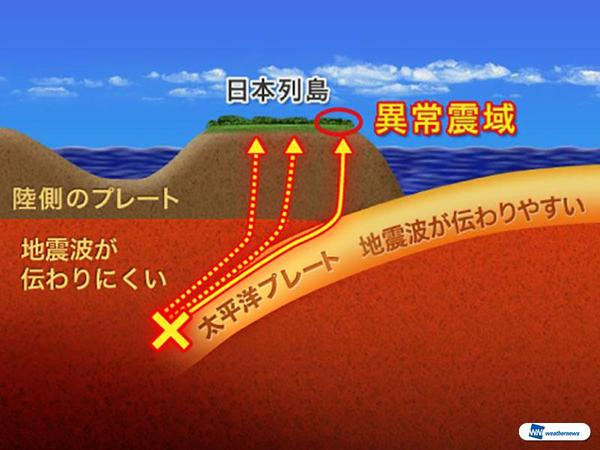
4. 異常震域
1日朝の三重県南東沖の地震は深さ約350kmの深発地震で、震源から遠い関東・東北の太平洋側で揺れが大きくなる「異常震域」の現象が出ました。ウェザーニュースは南海トラフ地震とは関係ないと解説しています。
出典：ウェザーニュース
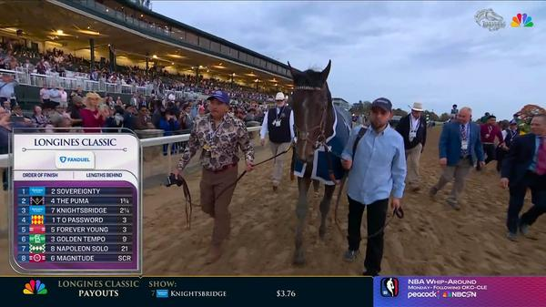
5. BCクラシック
米国競馬の祭典ブリーダーズカップのメインレース。1着ソヴリンティ、2着ザプーマ、3着ナイツブリッジで、日本勢はテーオーパスワード4着、フォーエバーヤング5着でした（着順はX投稿より）。
⚠ 未確認（X情報のみ）
日本マクドナルドが11月2日から12日間、ポテトM・Lを250円にするキャンペーン。このハッシュタグを付けて1日中にリプライすると抽選でマックカードが当たるため、投稿が殺到しています。
⚠ 未確認（X情報のみ）
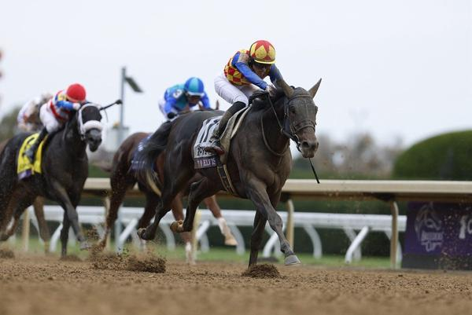
10. BCスプリント
日本のテーオーエルビス（坂井瑠星騎手）が後方から差し切って優勝し、日本調教馬として初めてBCスプリントを制しました。
出典：netkeiba（Yahoo!ニュース）
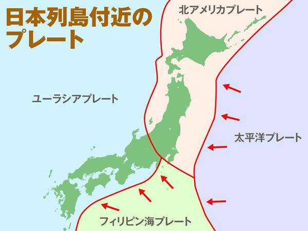
11. 深発地震
今回の地震は深く沈み込んだ太平洋プレート内で起きた深発地震とされ、「なぜ三重の地震で関東が揺れるのか」という解説投稿が広く共有されています。
⚠ 未確認（X情報のみ）
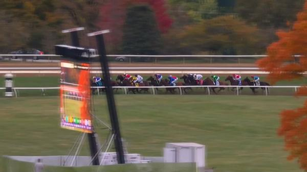
12. BCターフ
芝2400mのG1。アイルランドの愛ダービー馬ベンヴェヌートチェッリーニ（R・ムーア騎手）が勝ち、2着マップオブスターズ、3着ダイヤモンドネックレス。日本のディープモンスターは最下位でした。
⚠ 未確認（X情報のみ）
14. #f1jp
F1メキシコGPの予選。フェラーリのハミルトンが移籍後初のポールポジションを獲得し、ラッセルが0.009秒差の2番手。フェルスタッペンは最終アタックでミスがあったとされます。
⚠ 未確認（X情報のみ）
20. 坂井瑠星
BCスプリントをテーオーエルビスで勝ち、BCクラシックではフォーエバーヤングに騎乗（5着）。「ブリーダーズカップの坂井瑠星はすごい」と称える声が上がっています。
⚠ 未確認（X情報のみ）
Grok Bot がまとめました。